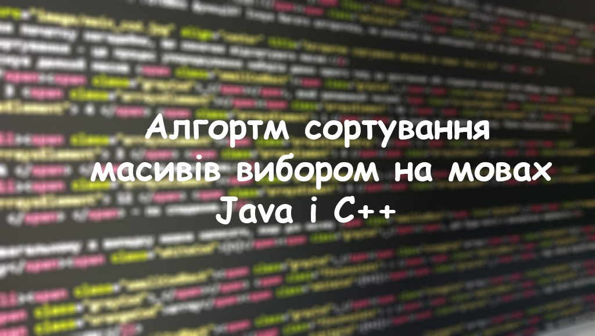

Сортування вибором
Зараз розберемо один з найпростіших методів сортування – це сортування вибором.
Якщо говорити коротко (приклад для сортування по зростанню): цикл перебирає і знаходить найбільший (найменший) елемент і переміщує його в правий (лівий) кінець масиву. Тепер повторюємо теж саме але вже з меншою кількістю елементів, поки повність не відсортуємо масив.

Тепер детальніше. Беремо масив . array[5] , з елементами .3 64 12 4 1.. І наше завдання розташувати його елементи по зростанню. Використаємо сортування вибором.
Для початку створюємо дві змінні . int pos, max; у яких будем зберігати номер найбільшого елемента і сам найбільший елемент аналогічно. Тепер створюємо цикл for, параметру задаємо значення значення останнього елементу, тобто довжина масиву мінус один, Параметр повинен зменшуватись на одиницю, і дути суворо більше за нуль. В результаті отримуємо цикл:
Для чого ж це? Параметр цього циклу буде зберігати в собі значення крайнього елементу куди треба вставити вірний елемент (тобто з кожною ітерацією параметр буде зменшуватись, бо крайній елемент вже стоїть на своєму місці).

Тепер у тілі циклу присвоюємо є змінній pos значення параметру і змінній max значення елементу масиви під номером pos. Отже:
…{pos = i;
max=array[i];
…}
Тепер нам потрібно знайти найбільший елемент в отриманому масиві. Для цього ми створимо новий цикл з параметром значення якого дорівнює нулю, збільшується і менше ніж номер крайнього елемента (в нашому випадку pos).
...{...
for(int j = 0; j < pos; j++){}
…}
У циклі же розміщуємо умовний оператор if, який перевірить, чи більше значення теперішнього елемента і max. Якщо .array[j] > max , тоді .pos=j; і також .max=array[j]; .
Тепер закриваймо цикл for(int j = 0;…) і присвоюємо array[pos]=array[i]; , тобто ми присвоюємо найбільшому елементу масиву (номер якого, нагадую, pos) крайній елемент, замість котрого вставляємо max.
І в результаті отримуємо відсортований масив: . 1 3 4 12 64 . .
Часова складність:
При пошуку мінімуму для довжини масиву перевіряються всі елементи, тому складність дорівнює O (n). Пошук мінімуму для кожного елемента масиву дорівнює O (n ^ 2).
Тепер розглянемо реалізацію цього алгоритму на таких мовах програмування, як Java і C++:
Java
import java.util.Arrays; public class Main { public static void main(String[] args) { int[] array ={3, 64, 12, 4, 1}; System.out.println(Arrays.toString(array)); for (int i = array.length - 1 ; i > 0 ; i--) { int pos = i; int max = array[i]; for (int j = 0; j < i; j++) { if (array[j] > max) { pos = j; max = array[j]; } } array[pos] = array[i]; array[i] = max; } System.out.println(Arrays.toString(array)); } }
C++
#include < iostream > using namespace std; int main(){ const int n = 5; int array[ n ] = {3, 64, 12, 4, 1}; for (int i = 0; i < n; i++){ cout << array[ i ] << '\t'; } cout << endl; int max; int pos; for (int i = n - 1; i > 0; i--){ max = array[ i ]; pos = i; for (int j = 0; j < i; j++) if ( array[ j ] > max){ pos=j; max = array[ j ]; } array[pos] = array[ i ]; array[ i ] = max; } for (int i = 0; i < n; i++){ cout << array[ i ] << '\t'; } cout << endl; }
Також пропоную ознайомитись з: